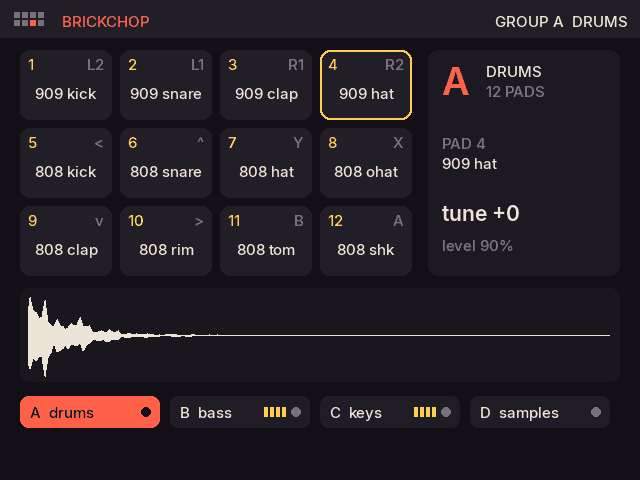
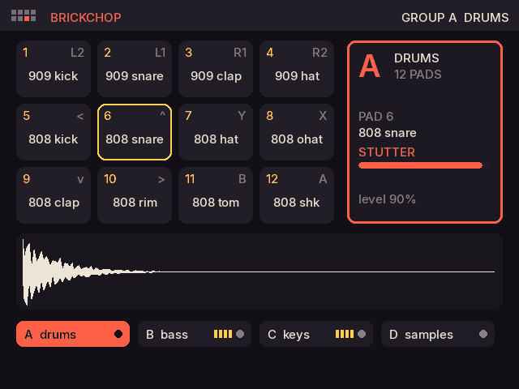
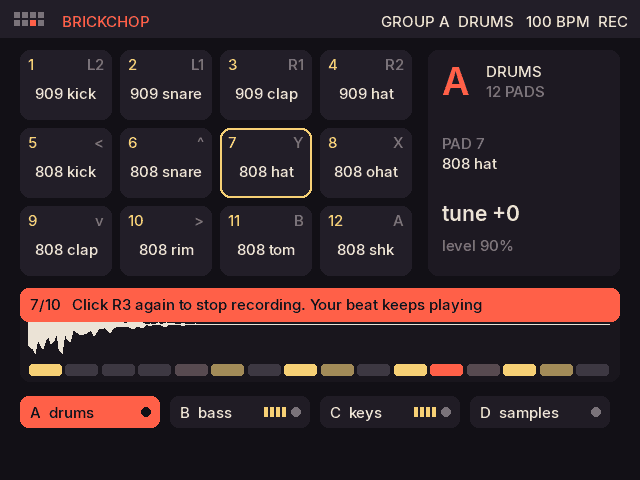

A K.O. II-style sampler for the Brick. Four groups of twelve pads, each pad its own sound. Chop a loop across them, play a sound in keys, punch in stutters and tape stops, record it all into patterns, then commit the lot into a new sample and chop that.
The Brick's twelve thumb and finger buttons are laid out like the K.O. II's keypad. Hold SELECT and press a direction to switch groups: A drums, B bass, C keys, D your samples. Each pad holds its own sound: a kit part, a synth note, any WAV, or a slice of one.
Pick a loop and it is cut at its hits across all twelve pads of a group.
Click the left stick: the last pad's sound plays chromatically across all twelve pads.
Left stick up and down tunes the last pad; left and right sets its level.

Push the right stick in a direction and the whole mix gets that effect until you let go; the further you push, the harder it hits. Stutter and beat repeat lock to the tempo.
| Push | Effect |
|---|---|
| Up | Stutter |
| Up-right | Beat repeat |
| Right | Filter sweep |
| Down-right | Bitcrush |
| Down | Tape stop |
| Down-left | Half speed |
| Left | Reverse |
| Up-left | Reverb throw |

START plays; clicking the right stick records. Whatever you play lands on the nearest 16th of the group's pattern, and it loops, so you build a beat pass by pass, then switch to the bass group and record over it. Each group keeps its own pattern of one, two or four bars.
Hold R3 and tap a pad to take it out of the pattern.
Records every pattern, punch-ins included, into a new sound on group D. Chop it, play it in keys, record over it.
Eight slots save everything: pads, sounds, patterns, tempo and effects.

Brickchop sees the WAVs in its own samples folder and in Bricklab's, Brickchord's and Brickglide's.
A keyboard, an Orchid or an OP-Z plays the pads: C2 up is pads 1 to 12, and in keys any note plays at its pitch.
Where the Brick sees a USB audio input, Record captures it straight onto a pad. Still being tested on the Brick Pro.
| Button | What it does |
|---|---|
| 12 pads | L2 L1 R1 R2, < ^ Y X, v > B A |
| SELECT + < ^ v > | Group A, B, C or D. A quick tap of SELECT opens Settings |
| L3 | Keys: the last pad across all twelve, chromatically |
| Left stick | The fader: up and down tune, left and right level |
| Right stick | Punch-in FX, only while held |
| START | Play and stop every group's pattern |
| R3 | Record. Hold R3 and tap a pad to erase it |
brickchop-v0.4.0-beta-knulli.zip from the beta release.brickchop folder, Brickchop.sh and images into roms/ports on the card.It shares its engine with Brickchord, Bricklab and Brickglide, and its samples with all three.